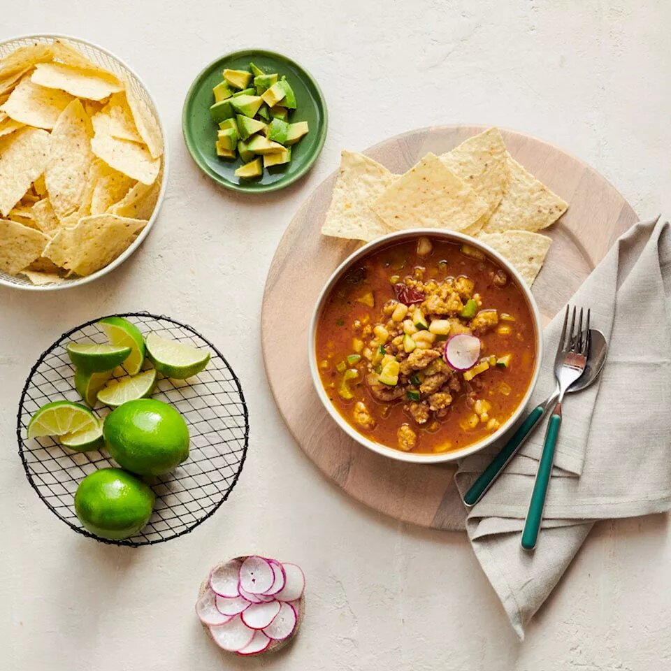

Red chile pozole

Description
These air fryer shrimp fajitas are simple to make. Garnish with guacamole and cilantro if desired.
Ingredients
- 3 tablespoons olive oil, divided
- 1 small yellow onion, peeled and diced (about 1 cup diced)
- 2 stalks celery, chopped (1/2 cup)
- 4 cloves garlic, peeled and chopped
- 1 medium zucchini, diced (about 2 cups diced, about 10 oz whole)
- 1 pound Pure Farmland® Simply Seasoned Plant-Based Protein Starters
- 1 ancho chile in adobo sauce
- 3 tablespoons adobo sauce from can
- 1 teaspoon ground cumin
- 1 teaspoon mild chile powder
- 6 cups low-sodium vegetable broth
- 1(15ounce) can yellow hominy, drained
- ½ teaspoon dried Mexican oregano
- 1 pinch kosher salt, or more to taste
To serve
- 8 springs of cilantro, small stems only, or more as needed
- 1 medium avocado, peeled and diced
- 2 medium radishes, thinly sliced
- 2 medium limes, each cut into 6 wedges
- 2 cups tortilla chips
Directions
- Heat a large Dutch oven or pot over medium heat. Add 2 tablespoons olive oil, then onion, celery and garlic. Cook 3 minutes, stirring occasionally, then add the zucchini. Cook 5 more minutes, until zucchini is slightly softened, then remove from heat. Transfer vegetables to a plate and reserve.
- Return pot to medium heat. Add remaining 1 tablespoon olive oil, then Protein Starter. Using a wooden spoon, break apart into pieces about 1/2-inch big. Cook 8 to 10 minutes or until Protein Starter is lightly golden. Add ancho chile, adobo sauce, ground cumin, and chile powder. Cook 2 more minutes, breaking up ancho chile with spoon.
- Add vegetable broth, hominy, bay leaves, oregano, and reserved vegetable mixture. Bring to a simmer over medium-high heat, then reduce to medium-low heat and cook 10 to 12 minutes or until vegetables are tender. Season with kosher salt, if desired.
- To serve, top with cilantro leaves, diced avocado, and radishes. Serve with lime wedges and tortilla chips, if desired.
Cook`s note:
Instead of tortilla chips, you can also use broken tostada shells for garnish.